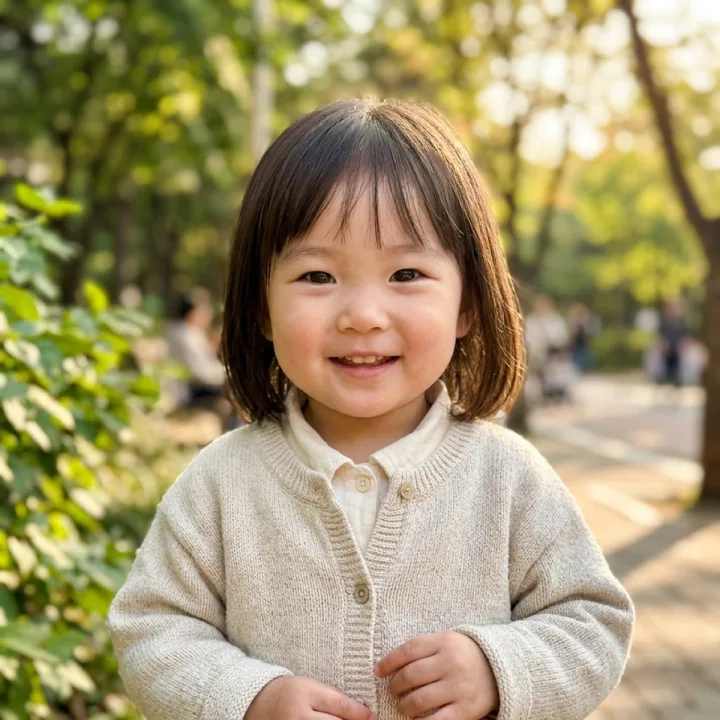
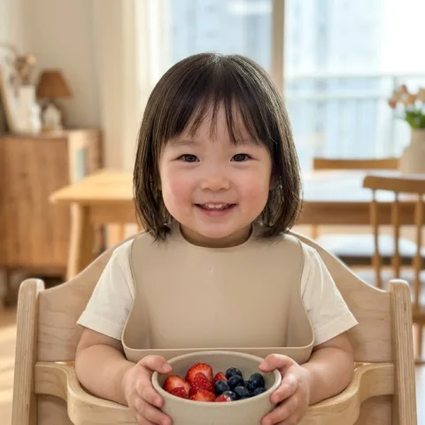
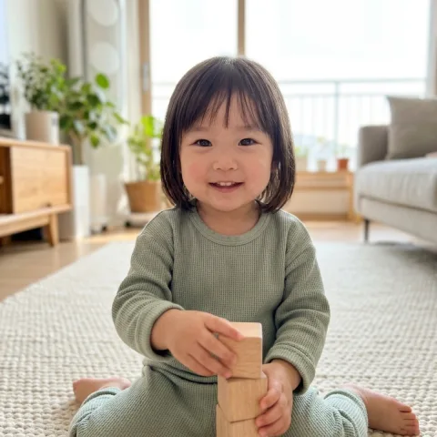
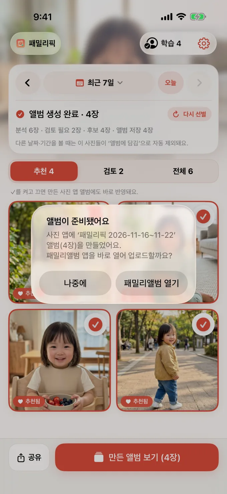
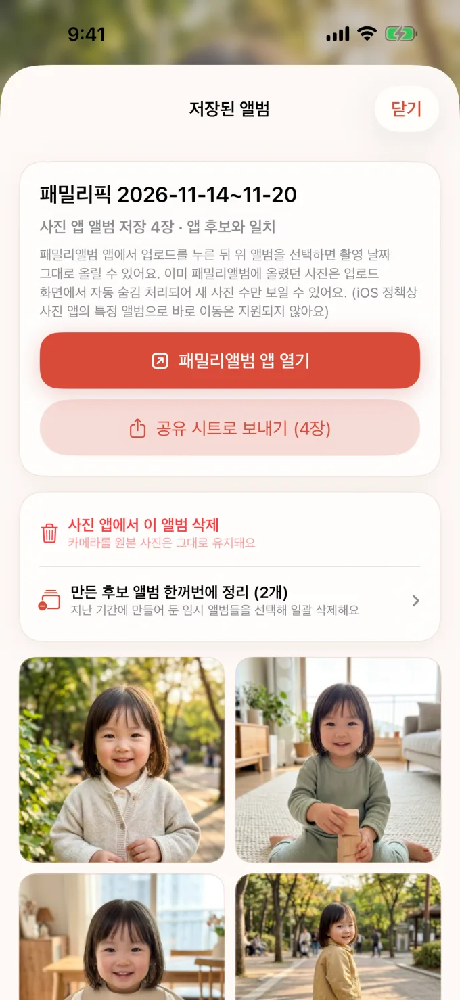

체크할수록 닮아가는 시선
흔들린 연사와 어질러진 배경은 뒤로 미루고, ✓로 남기고 뺀 선택을 기억해 내 눈에 좋은 표정부터 먼저 보여줍니다.
패밀리앨범 · 가족 공유 전 사진 선별
수백 장의 연사와 어수선한 거실 배경 사이에서 잘 나온 표정만 먼저 골라둡니다. 체크(✓)할수록 우리 집의 시선을 배우며, 모든 사진은 오직 iPhone 안에서만 다뤄집니다.

Apple 온디바이스 Vision·촬영 일시(EXIF) 보존·무료·회원가입 없음


복잡한 설정 대신, 평소 사진을 고르는 손길 그대로 우리 집 사진첩의 결을 맞춥니다.

흔들린 연사와 어질러진 배경은 뒤로 미루고, ✓로 남기고 뺀 선택을 기억해 내 눈에 좋은 표정부터 먼저 보여줍니다.
직접 앨범 만들기를 누를 때만 간결한 날짜 이름의 앨범을 묶어주며, 원본 촬영 일시(EXIF) 그대로 패밀리앨범을 바로 열어 올릴 수 있습니다.
공유를 마친 후보 앨범은 원본 걱정 없이 한 번에 비우세요. 이미 앨범에 담았던 사진은 다음 기간 추천에서 조용히 제외됩니다.
기간을 고르고, 마음에 드는 표정을 남기고, 패밀리앨범에 올린 뒤 임시 앨범을 비우기까지.
표정과 구도가 또렷한 컷을 먼저 모읍니다
기준 사진 1~2장과 ✓ 선택으로 정교해집니다
날짜 앨범 생성 직후 곧바로 연결됩니다

역할을 마친 임시 앨범만 깔끔히 비웁니다

얼굴·장면 분석과 취향 학습은 Apple의 온디바이스 Vision으로 기기 내부에서만 동작합니다. 사진이나 얼굴 정보는 외부 서버·클라우드 AI로 단 한 장도 전송되지 않으며, 계정도 광고 추적도 없습니다.
전혀 그렇지 않습니다. 사진 분석과 얼굴·장면 인식, 취향 학습은 모두 iPhone 내부(Apple Vision · PhotoKit)에서만 처리되며, 어떠한 서버로도 사진이나 얼굴 특징이 전송되지 않습니다.
네. 직접 ‘앨범 만들기’를 눌렀을 때만 Apple 사진 보관함의 원본 자산을 그대로 묶어주므로 촬영 일시와 메타데이터가 100% 보존됩니다.
임시 앨범 목록만 정리될 뿐 카메라롤 원본 사진은 그대로 남으며, 이미 담았던 사진은 다음 추천에 중복으로 뜨지 않습니다. 패밀리픽은 App Store에서 무료로 제공됩니다.
이번 주 가장 예뻤던 표정 몇 장만 추려 가족들과 나누어 보세요.